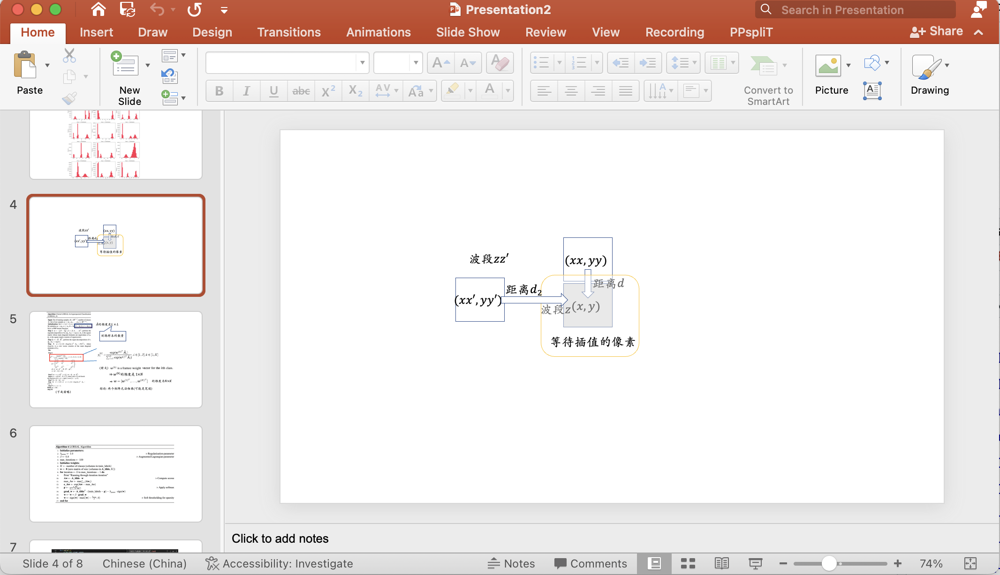

1. 使用搜索引擎
恭喜大家完成了没有什么趣味的高考 — 整天就是无趣的做题, 做题, 留给个人成长和反思的时间可真不多. 高考之后, 我们获取的信息的方式就取得了根本性的突破–从老师、家长 的嘴里被动地接受信息, 到我们主动地理解一些信息. (如果你以前是网上冲浪高手, 那么恭喜你, 你就具备了成为一名合格大学生的品质之一!)
1.1 故事一则
快速问答:
高考的答案上哪找?
简单! 打开百度, 搜索2024高考, 百度会帮助你把东西送到头版的!
这里, 我们为大家推荐 大学生活质量指北 这个网站. 这里, 你能够看到各个大学生对于大学的真实感受
上合适的大学
许多普通的同学认为自己加入捡漏进入清华北大是很幸运的. 实际上, 大学要比高中无论是灵活度, 还是难度和广度, 都是成几个数量级往上增长的. 比如, 你可能在过去的10年生活里面每天只会做一些固定的题目; 但是那些学校的学生可能有一些从10岁的时候就已经入门这专业并且已经在这专业上面学习了若干年了.
又或者, 因为你的思维模式已经受限于高考, 导致一页书看了几个下午还没有看懂, 但是隔壁的同学一天就把这一章看完了!
不用自卑! 这都是相当常见的情况. 那些看似一下午就能做完这些的同学实际上是在更小的时候做了一点有趣训练, 但是那时候表达能力有限, 你去问他可能没办法很好地表达出来. 你如果接受一点合适的训练, 就会发现这种情况会稍微缓解一点(当然大概率赶不上 — 别人可能已经用了这个方法若干年了), 但也是最好的方法了.
你将在这门课里面了解一些高中教育缺失的部分. 同时, 我们还会给出一些自我学习的方法, 以便你在感到迷茫的时候可以自己继续.

1.2 计算机上的软件
当然，我们常常听人抱怨说：“电脑我不会用，太难了！”这就好比抱怨救生圈太圆一样。实际上，电脑本来是为了把我们从繁重的劳动中解放出来的。比如说，计算一下过去一年的支出，或者帮你决定今晚是看剧还是看书。所以，下次当你面对电脑感到迷茫时，记得它其实是你的数字助手！
确实，既然电脑是你的帮手，大多数时候用正常人的思路处理问题就可以了。对于那些界面复杂的软件，其实有一个并不那么优雅但非常有效的学习方法——把所有的按钮都点一遍！这就像是在没有地图的新城市里探险，虽然可能会迷路，但你总会发现一些意想不到的惊喜。只要观察好点击每一个按钮之后发生了什么就好了。
1.2.1 例子1: Excel
请考虑
- 单元格
- 公式中的单元格
- 简单的求和
- 物理实验处理
1.2.2 例子2: Powerpoint

1.2.3 帮助界面
- 通常按下 F1 来召唤
1.3 浏览器与 F12(审查元素)
1.4 可能的问题
问1: 这些按钮都啥意思啊, 我看不懂.
答1: 先别急着看不懂. 在电脑的世界里, 很多时候没有那么明确的“正确答案”, 关键在于敢于尝试和探索. 就像你在一片未知的森林里探险, 每一个步骤都可能带来新的发现. 所以, 我的建议是, 不妨一步一步来, 把每个按钮都试一试, 看看电脑会有什么反应.
在这个探索的过程中, 尝试每一个功能其实是最重要的. 只要注意安全, 避免点击那些明确带有警告提示的选项(暑假的时候是最好的, 因为你还没有什么特别关键的文件. 即使弄坏了也有恢复的空间), 其他的按钮就大胆去点吧. 通过实践, 你会渐渐理解每个按钮的作用, 这种学习方式比单纯读说明书来得直接和有效多了. 这样一来, 你不仅能够解锁软件的各种功能, 还能增强你解决问题的能力, 一举两得呢！
特别提醒: 当你需要下载软件时, 选择正确的来源非常关键, 以确保你的电脑安全不受威胁. 以下是一些实用的提示, 帮助你避免不必要的风险:
-
避免不可靠的下载源: 尽量不要在类似于华军软件园这样的网站下载软件. 这些网站可能提供的安装包中包含了许多不必要的捆绑软件, 这些捆绑软件可能会悄无声息地安装额外的程序, 影响你的电脑性能, 甚至侵犯你的隐私.
-
选择官方网站下载: 最安全的下载方式是直接访问软件的官方网站. 官方网站提供的下载链接最可靠, 能确保你下载的软件是最新且未被篡改的版本.
-
下载源文件: 在可能的情况下, 尽量下载软件的源文件, 而不是仅仅一个安装执行文件, 特别是要警惕文件大小异常小的.exe文件. 源文件通常是压缩包, 包含了软件的所有安装文件, 这样你可以完全控制安装过程并避免不必要的捆绑软件.
通过遵循这些建议, 你可以更安全地下载和安装软件, 避免不必要的风险, 保护你的个人信息和电脑安全.
下一节我们会潜入计算机系统的更深层, 看一看鼠标和图像界面之下的内容.